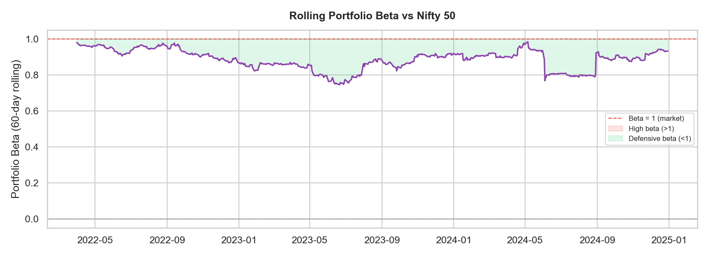
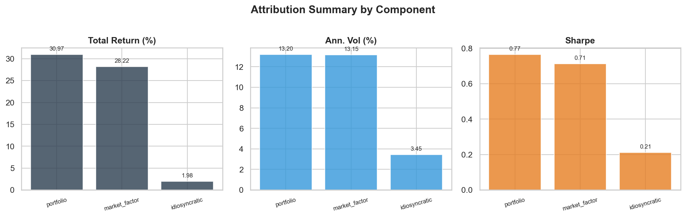

Motivation
In trading risk management, understanding why a portfolio moved is as important as knowing how much it moved. Every morning the desk asks: was today's P&L driven by the market, or did something specific to the position cause it? That decomposition — separating beta-driven return from idiosyncratic return — is the foundation of risk attribution.
I built this project to replicate that workflow on public Nifty 50 data: download real constituent price history, estimate rolling betas using OLS regression, decompose portfolio returns, measure concentration, and produce the kind of attribution charts a risk manager or portfolio analyst would actually review.
What It Does
| Module | Capability |
|---|---|
| data_loader.py | Downloads 20 Nifty 50 tickers via yfinance (3 years); synthetic fallback for offline use |
| factors.py | Rolling 60-day OLS Beta per stock; portfolio-level hedge ratio (weighted average Beta) |
| attribution.py | Decomposes daily P&L into market factor + idiosyncratic; Sharpe, drawdown, vol per component |
| concentration.py | HHI concentration index, effective N, top-N holdings, sector exposure breakdown |
| report.py | 5 charts: cumulative attribution, rolling Beta, attribution bars, Beta heatmap, idio distribution |
Methodology
Rolling Beta Estimation (OLS)
For each stock i, Beta is estimated over a trailing 60-day window using Ordinary Least Squares:
Estimated via statsmodels.regression.rolling.RollingOLS
Window: 60 trading days (~3 months), updated daily
This captures how each position's sensitivity to the market evolves over time — a stock's Beta in a vol regime can be very different from its Beta in a trending market.
Portfolio Beta and Return Decomposition
Portfolio-level Beta is the weighted average of position Betas:
r_portfolio(t) = β_portfolio × r_market(t) + r_idiosyncratic(t)
r_idiosyncratic(t) = r_portfolio(t) − β_portfolio × r_market(t)
This identity holds exactly by construction — the idiosyncratic term is always the residual after removing the market component. No approximation.
Concentration Metrics (HHI)
The Herfindahl-Hirschman Index measures how concentrated the portfolio is:
Effective N = 1 / HHI
Equal-weight 20-stock portfolio → HHI = 0.05, Effective N = 20.0
Single-stock portfolio → HHI = 1.00, Effective N = 1.0
Results — Real Nifty 50 Data (Jan 2022 – Dec 2024)
20-stock equal-weight portfolio, 3 years of daily data:
Portfolio Beta: 0.933 | HHI: 0.050 | Effective N: 20.0
Total Return: +30.97% · Ann. Vol: 13.20% · Sharpe: 0.76 · Max Drawdown: −17.91%
Market Factor: +28.22% · Ann. Vol: 13.15% · Sharpe: 0.71
Idiosyncratic: +1.98% · Ann. Vol: 3.45% · Sharpe: 0.21
91% of portfolio return was market-driven. Idiosyncratic (alpha) = +1.98% over 3 years.





Key Insight
The equal-weight portfolio is overwhelmingly a market tracker (Beta 0.93, 91% market-driven return). The idiosyncratic Sharpe of 0.21 is statistically weak — you would need concentrated bets or a genuine stock-selection edge to improve it. This is the correct interpretation for an equal-weight index-like portfolio, and the attribution makes that explicit rather than hiding it in aggregate return numbers.
In a real risk management context, this framework identifies which positions are contributing directional risk (high Beta) vs. diversifying (low correlation to market factor) — directly informing hedging decisions and position sizing.
Sector Exposure
| Sector | Weight | Stocks |
|---|---|---|
| Financials | 30.0% | 6 |
| FMCG | 15.0% | 3 |
| IT | 15.0% | 3 |
| Materials | 10.0% | 2 |
| Other | 30.0% | 6 |
How to Run
cd factor-risk-attribution
pip install -r requirements.txt
python run_demo.py
Charts saved to ./output/. Edit the weights dict in run_demo.py to run on any subset of the 20 Nifty 50 tickers with custom weights. Works offline — falls back to synthetic correlated returns if yfinance is rate-limited.
Run Tests
12 tests covering portfolio return computation, attribution identity (portfolio = market + idio exactly), max drawdown, HHI, effective N, and top-N holdings selection.